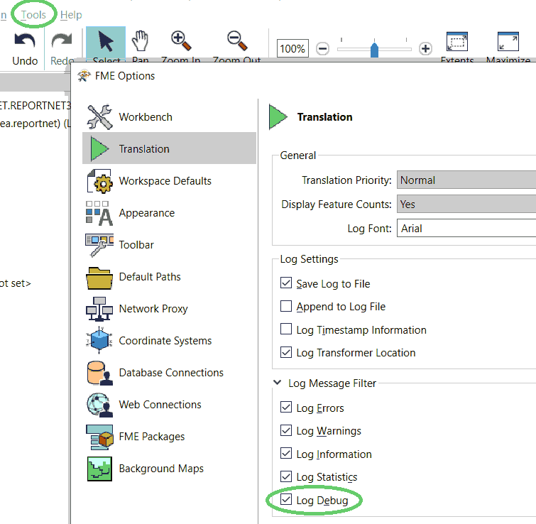
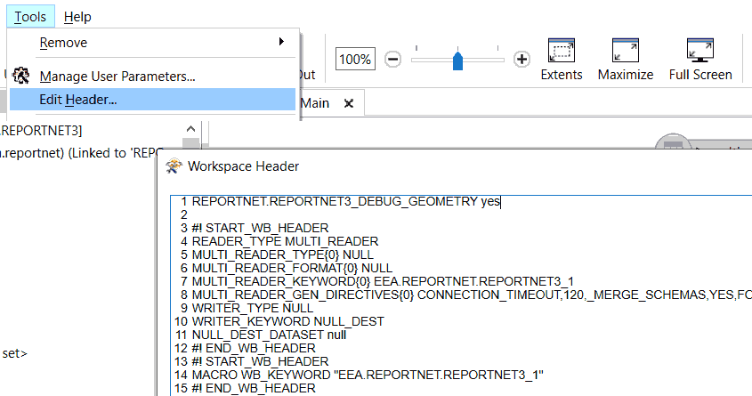

Reportnet 3 (eea.reportnet)
This FME Package contains the Reportnet 3 Reader introduced for FME 2021.
Reportnet 3 is the new e-Reporting platform for reporting environmental and climate data to the European Environment Agency (EEA). The platform embraces the strategic goals of the European Commission's Green Deal and Digital Strategy and will host reporting tasks on behalf of EEA and the Commission.
Usage
The Reportnet 3 Reader uses a Reportnet 3 Web Connection. The connection should be configured with a Dataflow ID and API-key from the e-Reporting platform.
When this is configured the user may browse the Datasets the API-key grants access to.
FME Feature Types are defined by selecting the corresponding Reportnet 3 Tables.
See also
For instructions and more information: Package Homepage.
Quick Facts
| Keyword | Value |
|---|---|
| Format Type Identifier | EEA.REPORTNET.REPORTNET3 |
| Requirements | FME Build 21222+ |
| Reader/Writer | Reader |
| Licensing Level | Professional and above |
| Dependencies | Python 3.8+ |
| Dataset Type | None |
| Feature Type | Table name |
| Typical File Extensions | Not applicable |
| Automated Translation Support | Yes |
| User-Defined Attributes | Yes |
| Coordinate System Support | Yes |
| Generic Color Support | No |
| Spatial Index | No |
| Schema Required | Yes |
| Transaction Support | No |
| Geometry Type | reportnet_type |
| Encoding Support | UTF-8 |
Geometry Support:
| Geometry | Supported? |
|---|---|
| aggregate | yes1 |
| circles | no |
| circular arc | no |
| donut polygon | yes |
| elliptical arc | no |
| ellipses | no |
| line | yes |
| none | yes |
| point | yes |
| polygon | yes |
| raster | no |
| solid | no |
| surface | no |
| text | no |
| z values | yes |
Only homogeneous aggregates (MultiPoint, MultiLine...) but not heterogeneous ones.
Reportnet 3 Feature Representation (Format Attributes)
| Attribute Name | Notes | Contents |
|---|---|---|
| reportnet_type | Read-only | reportnet_none, reportnet_point, reportnet_linestring, reportnet_polygon |
| reportnet_geom_column | Read-only | The Reportnet3 field that was used to create FME geometry. |
| reportnet_country_code | Read-only | The reporting country (when applicable). |
| reportnet_id_table_schema | Read-only | Id of the table schema (when applicable). |
| reportnet_id_record | Read-only | Id of the record (when applicable). |
Reportnet 3 Reader Parameters
Reportnet 3 Connection
The Reportnet 3 Reader uses a Reportnet 3 Web Connection.
The connection should be configured with an API-key, a Dataflow ID and optionally Provider ID from the e-Reporting platform.
Dataset
The Reportnet 3 Dataset
When selecting the Reportnet Dataset using the browse-button, the value will be encoded for readability, e.g. "My Dataset (42)", where 42 corresponds to the dataset id.
When supplying the value for dataset dynamically, such as when used in a FeatureReader, it is valid to only specify the numeric id.
Table(s)
The Reportnet 3 Table(s) to read from the selected Dataflow/Dataset
Advanced
Bulk size
The number of features (table records) to fetch in each roundtrip to the Reportnet3 HTTP API backend.
Depending on how many fields a table has, the optimal value may differ.
Setting a value lower than 1 is not supported.
Concurrent HTTP requests
The reader will fetch pages in parallel up to the specified number of concurrent requests.
In some scenarios it can be possible to increase the throughput by carefully configure the bulk size in combination with number of concurrent requests.
Connection Timeout (seconds)
Timeout value for the full download time.
If retrieving data from the Reportnet3 HTTP API backend is not finished within timeout seconds, the connection is aborted and an exception is raised.
Force data types
If set to Yes, FME will try to parse the text-values retrieved from the Reportnet3 HTTP API backend into the closest corresponding FME type, e.g. "5" NUMBER_INTEGER is parsed into an FME integer value of 5.
If set to No, interpretation is not performed and all values are passed to FME as text regardless of the declared type.
Parse geometry
If set to Yes, FME will try to convert a geometry column to an FME geometry. The geometry column will be dropped from schema. The name of the geometry column will be stored in the format paramater reportnet_geom_column.
If set to No, FME will not attempt to create an FME geometry. All geometry columns from Reportnet 3 will maintain their json representation.
Default geom column for all feature types
For Reportnet 3 tables that contain multiple geometry fields, this setting controls wich of them should be used by FME. The default behaviour is to use the first occuring geometry column in Reportnet 3 table definition.
Schema Attributes
Additional Attributes to Expose
Use this parameter to expose Format Attributes in Workbench when you create a workspace:
- In a dynamic scenario, it means these attributes can be passed to the output dataset at runtime.
- In a non-dynamic scenario, this parameter allows you to expose additional attributes on multiple feature types. Click the browse button to view the available format attributes (which are different for each format) for the reader.
Reportnet 3 Reader Feature Type Parameters
To access feature type parameters, click the gear icon on a feature type in the workspace. This opens the Feature Type Parameter Editor.
Options
WHERE Clause
A limited filtering is supported by supplying a where-clause.
The where clause must contain exactly one predicate in the form:
<identifier> = <literal-value>
Where identifier is a valid fieldname (FME attribute name), and literal-value a valid SQL literal.
Please note that equality (=) is the only operator that can be used in the expression, i.e. !=, <, >, AND, OR are all examples of operators that can not be used.
These restrictions also applies when using the Reportnet 3 Reader in a FeatureReader-transformer.
Examples:
id = 2
r = 10.2
Double quotes must be used if the field name contains special characters like whitespace:
"my field" = 'Some text'
Single quotes in a string literal needs to be escaped by doubling them:
"my doc" = 'I''d like to code more'
Newlines should be ok but can be tricky.
"my doc" = 'A longer text
Newlines should be ok'
In order to use specific newline character(s), url-encoding can be used:
"my doc" = 'First line%0D%0ASecond line separated by CRLF'
"my doc" = 'First line%0ASecond line separated by LF'
"my doc" = 'First line%0DSecond line separated by CR'
Reportnet 3 Writer Parameters
Bulk Size
The parameter adjusts how many FME features will be bundled together for each HTTP transactions to the Reportnet 3 API. The parameter is required with a value larger than 0.
Connection Timeout
Timeout value for the upload time.
If importing data to the Reportnet3 HTTP API backend is not finished within timeout seconds, the connection is aborted and an exception is raised.
The import is performed in chunks controlled by "Bulk Size". The timeout is set on each HTTP transaction.
For optimal performance, the "Bulk Size" and "Connection Timeout", may need to be adopted for different datasets.
Reportnet 3 Writer Feature Type Parameters
To access feature type parameters, click the gear icon on a feature type in the workspace. This opens the Feature Type Parameter Editor.
Options
Spatial Column
Determines target attribute in Reportnet 3 to store the FME geometry. If Spatial Column is not defined, the writer will attempt to use the format attribute reportnet_geom_column as fallback. If the FME feature has a geometry and neither Spatial Column nor reportnet_geom_column was present, the writer will ignore geometry writing and output a warning message.
Geometry type handling
The parameter determines how strict the geometry type checking should be in the writer. For instance, if the writer geometry type was set to reportnet_point and a Polygon was recieved, the writer will act as following:
- Pass through: The geometry will be passed through to Reportnet 3 without type validation.
- Drop feature: The feature that contained the incorrect geometry type will be dropped.
- Terminate translation: The FME translation will terminate with an error message.
Reportnet 3 User Attributes
Name: The name of the attribute (field name).
| Type | Description |
|---|---|
| TEXT | |
| DATETIME | |
| DATE | |
| TEXT | |
| POINT | |
| LINESTRING | |
| POLYGON | |
| MULTIPOINT | |
| MULTILINESTRING | |
| MULTIPOLYGON | |
| NUMBER_INTEGER | |
| NUMBER_DECIMAL | |
| CODELIST | |
| MULTISELECT_CODELIST | |
| TEXTAREA | |
| URL | |
| PHONE | |
| LINK | |
| ATTACHMENT | When reading, attachments will be encoded by FME in a way to facilitate usage in the Reportnet3AttachmentDownloader transformer. |
Reportnet3AttachmentDownloader
The Reportnet3AttachmentDownloader can be used to download attachments form Reportnet 3.
For other usage then downloading attachments for features that are coming from a Reportnet 3 Reader, see section Attachment below for how to compose an attachment-attribute that can be used in this transformer.
Parameters
Reportnet 3 Connection [REPORTNET_CONNECTION]
Attachment selection [SRC_ATTR]
- Single Attachment: A single attachment is downloaded for each feature determined by the selected attribute
- Multiple: Several attributes can be selected for download. In this mode the attachments must be always be written to a folder.
Attachment [SRC_ATTR_SINGLE]
The attribute that identifies what to download. The value of the attribute must be encoded like this
<filename>:<dataflow_id>:<dataset_id>:<field_value_id>
Example:
myfile.txt:123:456:567
Attachments [SRC_ATTR_MULTIPLE]
Choose multiple attachment attributes to be processed.
Save Attachment(s) to [SAVE_FILE]
-
Attribute: The content of the attachment is stored to an attribute.
-
File: Each attachment is downloaded to a separate file. The local filepath will be composed like this:
<output folder>/<dataflow_id>/<dataset_id>/<field_value_id>/<filename>The features will have the value of the attachment attribute(s) replaced with the resulting local filepath.
Target Attribute [TARGET_ATTR]
The name of a new attribute that will recieve the content of the downloaded attachment.
Target Attribute Encoding [TARGET_ATTR_ENCODING]
For attachments with text content, this should be used to specify how FME should interpret the downloaded byte-stream into a string value. For other kinds of attachments, e.g. .pdf-files, use fme-binary.
Output Folder [OUTPUT_DIRNAME]
Specify a folder where the attachments should be stored.
Timeout [TIMEOUT]
Timeout value for the full download time (for each attachment).
If retrieving data from the Reportnet3 HTTP API backend is not finished within timeout seconds, the connection is aborted and an exception is raised.
Dynamic Connection String
In some cases it might be needed to dynamically configure the Reportnet3 connection.
The value supplied for the Reportnet3 connection will be evaluated like this:
- If the value matches exactly an FME Named Connection, that will be used.
- Else, if the value is a URL in one of the following forms, that will be used:
<api_url>?API_KEY=<token>[&VERSION=1][&PROVIDER_ID=<provider_id>]
<api_url>?API_KEY=<token>&VERSION=2&DATAFLOW_ID=<dataflow_id>[&PROVIDER_ID=<provider_id>]
Examples:
https://test-api.reportnet.europa.eu?API_KEY=502982a2-95a5-43ae-bf3b-d16356042c86
https://test-api.reportnet.europa.eu?VERSION=1&API_KEY=502982a2-95a5-43ae-bf3b-d16356042c86&PROVIDER_ID=5
https://test-api.reportnet.europa.eu?VERSION=2&API_KEY=502982a2-95a5-43ae-bf3b-d16356042c86&DATAFLOW_ID=861&PROVIDER_ID=10
Please note that in version 2, DATAFLOW_ID was added as a mandatory url-query-parameter.
This logic is applied both on the reader, writer and the Reportnet3AttachmentDownloader.
Debugging
The Reader/Writer has the ability to produce different kinds of debug information.
Please be aware that the debugging settings will cause a lot of extra I/O. In most cases, this is not preferred in a production environment.
FME Log Message Filter
In FME Workbench, go to "Tools/FME Options.../Translation/Log Message Filter" and check/uncheck the option "Log Debug": 
Reader/Writer Directives
There are no normal GUI parameters for these settings. Instead they can be edited using the "Workspace Header".
In FME Workbench, Go to "Tools/Edit Header..." and enter the directives: 
EEA.REPORTNET.REPORTNET3_DEBUG_GEOMETRY
Boolean (yes/no) - When set to yes, this will cause the writer to output the GEOJSON encoded geometry of each FME Feature to the FME Log File. Note that "Log Deug" also has to be enabled (see above).
Example:
EEA.REPORTNET.REPORTNET3_DEBUG_GEOMETRY yes
EEA.REPORTNET.REPORTNET3_DEBUG_HTTP_POST
WARNING - This directive will write the entire HTTP-Post Body to files in clear text. When working with sensitive data, that may not be a good idea.
Existing Folder - When set to an existing folder, this will cause the writer to dump each HTTP Post Body to a file in that folder.
Example:
EEA.REPORTNET.REPORTNET3_DEBUG_HTTP_POST C:\temp\rn3debug
The filename(s) holds some information and is composed like this:
<timestamp>_<duration>_<batch_nbr>_<url>_<param=value[¶m=value]*>_<http_status>.json
Example:
20221201_170215_3.85_1_https__test-api.reportnet.europa.eu_dataset_v1_8974_etlImport_dataflowId=1039_200.json
Characters that are not allowed in a filename ('\/:*?"<>') will be replaced by underscore ('_') or empty string ('').
Version Info
package.yaml
fpkg_version: 1
uid: reportnet
publisher_uid: eea
name: Reportnet 3
description: Access to European Environment Agency environmental and climate reporting data.
version: 1.1.1
minimum_fme_build: 21222
author:
name: EEA
email: discomap@eea.europa.eu
package_content:
transformers:
- name: Reportnet3AttachmentDownloader
version: 3
formats:
- name: reportnet3
python_packages:
- name: fme-reportnet
- name: sqlparse
web_services:
- name: Reportnet 3.xml
Commit
eea.reportnet3.api.fme@cde8736d3845dd870d256d89a412e36e88e58d07
Reportnet 3 changes
v1.1.1
- Four new data providers were added: Georgia (GE), Gibraltar (GI), Moldova (MD) and Ukraine (UA).
v1.1.0
- Two new format attributes were added:
reportnet_id_table_schema- Id of the table schemareportnet_id_record- Id of the record
v1.0.3
- Verbose debugging can be controlled by using directives
EEA.REPORTNET.REPORTNET3_DEBUG_GEOMETRYandEEA.REPORTNET.REPORTNET3_DEBUG_HTTP_POST. Example Workspace Header:
EEA.REPORTNET.REPORTNET3_DEBUG_GEOMETRY yes
EEA.REPORTNET.REPORTNET3_DEBUG_HTTP_POST C:\temp\my_rn3_http_posts
#! START_WB_HEADER
...
v1.0.2
- "Bulk Size" parameter that controls how many FME Features is now a writer parameter instead of a feature type parameter
- Writer parameter "Connection Timeout" was added
v1.0.1
README updated
v1.0.0
Data provider code(s) can now be controlled by attribute
Errors when parsing geometry should now be more detailed
v0.2.7
The setting for Dataflow ID has now moved into the connection parameters.
Because of this, the named connection has got a "version bump", i.e. named connections created with earlier versions of the reportnet3 package will not work with this version of the reader/writer/transformer.
Workspaces created with earlier versions of the reportnet3 package should continue to work.
v0.2.6
Let Readers inherit name from the selected webconnection
v0.2.5
Always use etlExport v2 (for now)
Minor fix in concurrent requests
v0.2.4 Initial test release
First testrelease